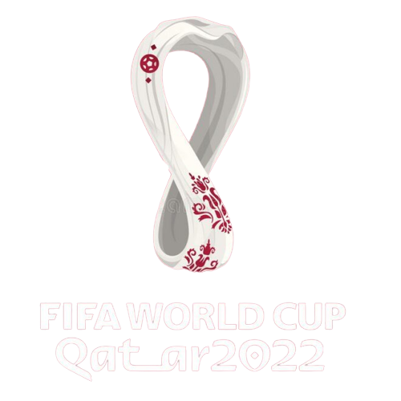
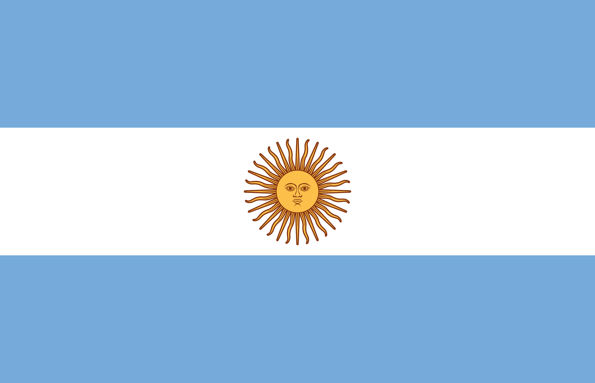
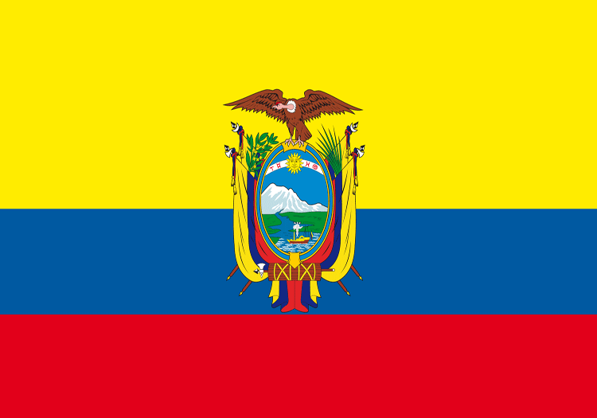
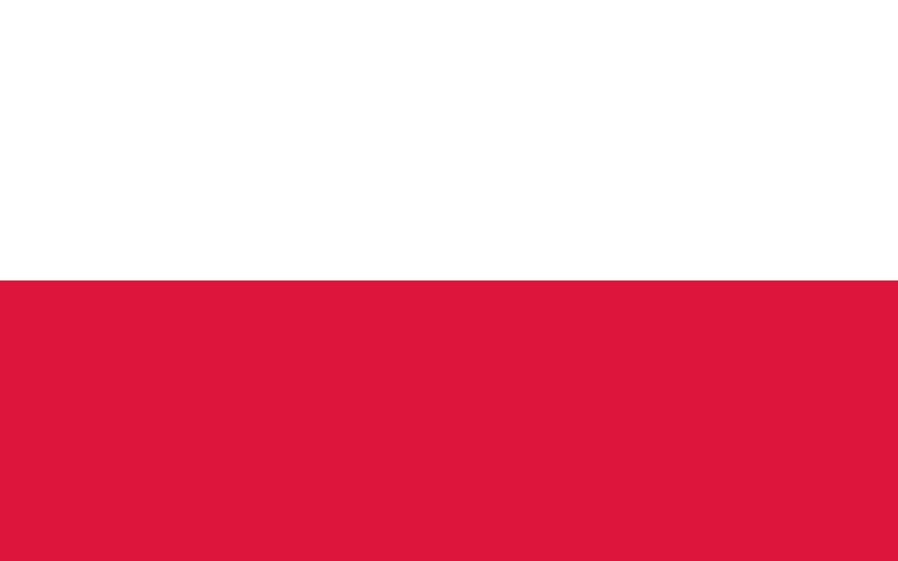

Les équipes de la compétition

Argentine
(ARG)
Australie
(AUS)
Belgique
(BEL)
Brésil
(BRA)
Cameroun
(CMR)
Canada
(CAN)
Costa Rica
(CRC)
Croatie
(CRO)
Danemark
(DEN)

Ecuador
(ECU)
Angleterre
(ENG)
France
(FRA)
Allemagne
(GER)
Ghana
(GHA)
Iran
(IRN)
Japan
(JPN)
République de Corée
(KOR)
Mexique
(MEX)
Maroc
(MAR)
Pays-Bas
(NED)

Pologne
(POL)
Portugal
(POR)
Qatar
(QAT)
Arabie-Saoudite
(KSA)
Senegal
(SRB)
Serbie
(SRB)
Espagne
(ESP)
Suisse
(SUI)
Tunisie
(TUN)
Etats-Unis
(USA)
Uruguay
(URU)
Pays de Galles
(WAL)